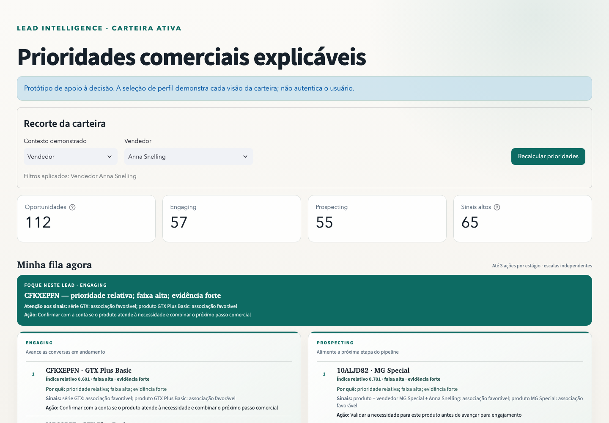
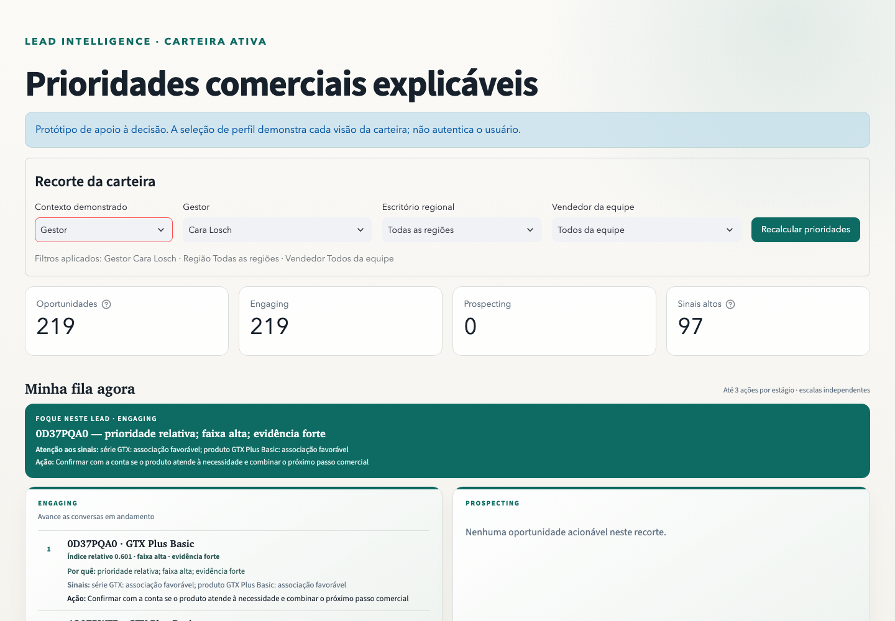
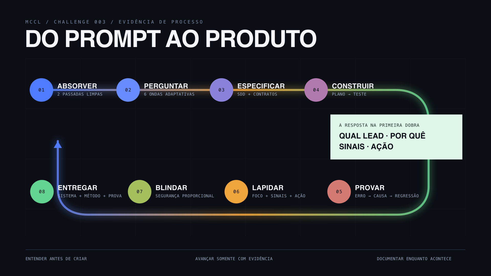
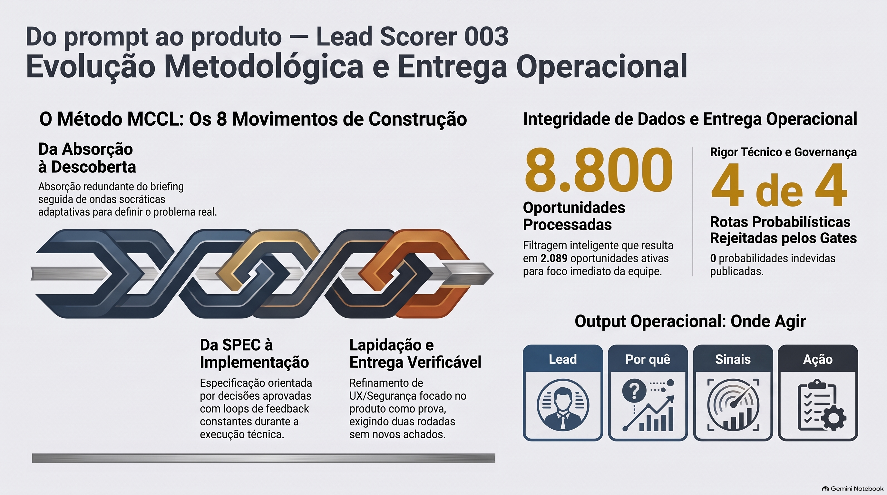
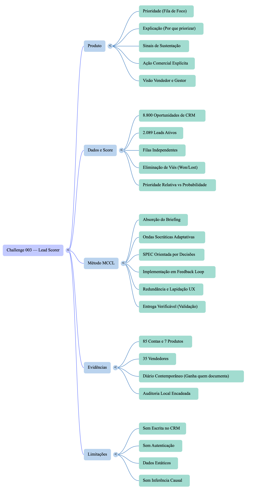

Seis ondas adaptativas substituíram arquitetura prematura por decisões aprovadas.
Uma ferramenta para segunda-feira de manhã
Abra. Veja. Foque.
O sistema transforma 2.089 oportunidades ativas em uma fila curta, explicável e acionável — sem pedir que o vendedor interprete uma planilha inteira.
A pergunta central
“Onde devo focar agora?”
A primeira dobra responde com o lead, o motivo, os sinais e a próxima ação.
12 etapas · avance pelos botões abaixo
VÍDEO / 05:48
A construção, explicada.
Produto primeiro. Depois, as decisões que impediram leakage, falsas probabilidades e um dashboard que exige interpretação demais.
01 / O PROBLEMA
Muito tempo em deals que não fecham. Boas oportunidades esfriam.
O critério de sucesso deixou de ser “ter um score” e passou a ser “reduzir a distância entre abrir o sistema e executar a ação certa”.
01
Não é um notebookÉ uma ferramenta operacional que roda com dados reais.
02
Não é só valorPrioridade combina evidência, estágio e contexto comercial.
03
Não é uma caixa-pretaA recomendação mostra por quê, sinais e ação.
02 / VISÃO DO VENDEDOR
O trabalho começa pronto.
1
112 oportunidades resumidas antes da lista completa.
2
Foque neste lead aponta o primeiro movimento sem filtro manual.
3
Duas filas independentes evitam comparar escalas incompatíveis.

12303 / A DECISÃO EXPLICADA
Um score só vale quando termina em ação.
A fila não força o vendedor a traduzir índice, modelo e faixa. Ela entrega quatro respostas, na ordem em que o trabalho acontece.
01
Qual leadCFKXEPFN abre a sequência.
02
Por quêPrioridade relativa, faixa alta, evidência forte.
03
Quais sinaisSérie e produto associados ao histórico observado.
04
Qual açãoConfirmar aderência e combinar o próximo passo comercial.
04 / VISÃO DO GESTOR
Orientar sem adulterar.
O gestor navega por equipe, região e vendedor. A prioridade temporária não muda o score e gera um evento local encadeado para auditoria.
1
Escopo visível antes da ação.
2
Intervenção separada da evidência do modelo.

05 / HONESTIDADE ESTATÍSTICA
Quando a probabilidade falha, o produto se abstém.
As quatro rotas superaram os baselines de erro, mas falharam no suporte das faixas. A interface suprimiu probabilidade e receita esperada em vez de transformar melhora marginal em promessa.
8.800oportunidades reais
2.089oportunidades ativas
4/4rotas probabilísticas rejeitadas
0probabilidades indevidas publicadas
06 / MÉTODO AUTORAL
Do prompt ao produto.
Absorção redundante, seis ondas socráticas, SDD, feedback looping, lapidação e segurança — cada avanço condicionado à evidência.

07 / INFOGRÁFICO EXECUTIVO
O processo em uma imagem.
Oito movimentos conectam briefing, decisão, implementação e entrega — sem esconder os gates que impediram uma probabilidade enganosa.

08 / MAPA MENTAL
Produto, método e limites conectados.
O mapa expõe as relações entre fila de foco, dados, evidências, método MCCL e as limitações assumidas pelo protótipo.

09 / O QUE O JULGAMENTO HUMANO MUDOU
Três intervenções mudaram o produto.
O dashboard deixou de exigir exploração e ganhou foco automático.
A recomendação passou a separar motivo, sinais e ação.
10 / ENTREGA VERIFICÁVEL
O software é a entrega. O método prova como chegou lá.
A documentação completa permanece como evidência de bastidor. Esta experiência é a porta de entrada.
Dados reais versionados e verificáveis
Priorização além de ordenar por valor
Explicação fiel à lógica publicada
Fila acionável para vendedor e gestor
Processo, erros e contribuição humana documentados